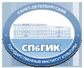

Saint Petersburg State University of Culture and Arts [Introduction]: Saint Petersburg State University of Culture and Arts is Russia's first higher education institution dedicated to education and research in the field of culture and arts. It has become one of the key innovative leaders in professional actor training, cultural and artistic development, and in Russian cultural education. Introduction to the institution Saint Petersburg State University of Culture and Arts...
Saint Petersburg State University of Culture and Arts
[Introduction]: Saint Petersburg State University of Culture and Arts is Russia's first higher education institution dedicated to education and research in the field of culture and arts. It has become one of the key innovative leaders in professional actor training, cultural and artistic development, and in Russia's cultural and educational sector. 
Introduction to the Institution
Saint Petersburg State University of Culture and Arts was established in 1918 and is Russia's first higher education institution engaged in education and research in the field of culture and arts. It is the most important cultural and artistic research and teaching base in the former Soviet Union and is now a university directly under the Ministry of Culture of the Russian Federation. Over more than eighty years since its founding, it has cultivated a large number of cultural and artistic talents for both the former Soviet Union and present-day Russia.
Since 2011, the university has recently reorganized its departments into 26 undergraduate majors and 24 graduate majors, as well as two specialized education departments (Film and Television Directing and Performing Arts). During the educational process, the school actively introduces modern multimedia information technology. Each year, the school organizes a series of important events, mainly artistic and creative activities, and has established dozens of creative studios, teams, and research labs within the campus. It also regularly hosts professional international forums, especially the international dance competitions held at the annual international dance forums, which play an important role. It also conducts cooperative training programs with countries such as Germany, Sweden, Spain, France, India, Canada, and Japan.
Professional recommendations
cultural theory and history;
Library Science and Book Taxonomy;
Applied Informatics;
museums and cultural relic preservation;
Musical instrument performance (divided into ethnic instruments, accordion, wind instruments, strings, etc.);
Modern Music Arts (which includes subjects such as pop song singing, modern band instrumental performance, modern band directing, children's music, modern music education, jazz, piano, etc.);
People's Art Creation (which includes departments such as drama director, film and television art director, photography, piano educator, etc.).
School philosophy
1. Innovative teaching in the application of creative and interactive skills;
2. Defined research directions.
3. Be truly responsible and earnest toward students;
4. Encourage the development of contemporary art creation and environmental development;
5. Encourage participation in public service The mission of Saint Petersburg State University of Culture and Arts is not only to provide excellent education and research in the fields of culture and art, but also to promote regional development, cross-regional cooperation, and strengthen collaboration among regions, regions, and international institutions, including education, culture, enterprises, and other institutions. The university is home to renowned Russian musicians, artists, and creative artists.
Arrangement of the academic system
Duration: Undergraduate, Graduate, Doctoral
Class Hours: Four years for undergraduate, two years for graduate studies, three years for doctoral programs
Fees
Foundation Course:$2,600 per year.
Dance Creation Major:$3,500 per year.
Major:$2,500-4,500 per year.
Accommodation:$90/month.
Medical Insurance:$120 per year.
圣彼得堡国立文化艺术大学
【导读】：圣彼得堡国立文化艺术大学是俄罗斯第一所在文化艺术领域从事教育和研究 的高等学府，在对专业演员培训和文化艺术发展领域，以及在俄罗斯文化教育领域已成为重要的创新领导者之一。
院校介绍
圣彼得堡国立文化艺术大学成立于1918年，是俄罗斯第一所在文化艺术领域从事教育和研究的高等学府，是前苏联最重要的文化艺术研究和教学基地，现俄罗斯联邦文化部直属大学。建校八十多年来，为前苏联和现俄罗斯培养了大批文化艺术人才。
从2011年起，学校近些系别改组成为26个本科专业和24个研究生专业，以及两个专业教育系(影视导演和表演艺术)。在教育过程中学校积极引进现代多媒体信息技术。学校每年将举办一系列重要的活动，主要包括艺术活动和创作活动，在学校里成立了几十个创作工作室、团队和研究室等;每年还定期举办专业性的国际论坛，特别是在每年国际舞蹈论坛举办的国际舞蹈比赛都起到了重要的作用。还与德国、瑞典、西班牙、法国、印度、加拿大、日本等国家开展合作培训项目。
专业推荐
文化理论和历史;
图书馆学和图书分类学;
应用信息学;
博物馆和文物保存;
乐器演奏(内分有民族乐器、手风琴、管乐和弦乐等分科);
现代音乐艺术(内分有流行歌曲演唱、现代乐队乐器演奏、现代乐队编导、儿童音乐、现代音乐教育、爵士乐、钢琴等分科);
人民艺术创作(内分有话剧导演、影视艺术导演、摄影、钢琴教育者等科)等。
学校理念
1、创造和交互式技巧应用的创新教学;
2、确定的研究方针;
3、切实的对学生认真负责;
4、鼓励发展当代艺术创造和环境发展;
5、鼓励参与公共服务圣彼得堡国立文化艺术大学的宗旨是不仅要提供优秀的文化和艺术领域的教育和研究，同时也要促进区域发展，跨地区合作，加强地区、区域和国际间的合作，合作包括教育、文化、企业和其他机构。大学里有俄罗斯著名的音乐家、艺术家和创意艺术工作者。
学制安排
学制：本科、研究生、博士
学时：本科四年、研究生两年、博士三年
费用
预科：2600美元/年。
舞蹈创作专业：3500美元/年。
专业：2500-4500美元/年。
住宿：90美元/月。
医疗保险：120美元/年。
English edition. Select 中文原文 to compare with the original Chinese article.
This article is edited and published by Liaoning Overseas Study Service Co., Ltd. The content is for study abroad planning reference only. Unauthorized reproduction is prohibited.
Information on policies, regulations, admissions brochures, and program fees is timely. Please refer to the latest releases from official institutions and institutions in various countries; For detailed verification, please Contact an advisor。